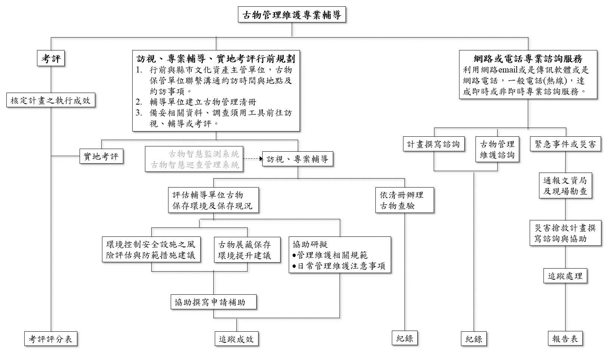

輔導中心
1.定位與任務
「古物保存管理維護專業輔導中心」其一主要功能即是作為「解決古物管理維護問題的窗口」
所以本團隊將努力推廣「古物保存管理維護專業輔導中心」
讓各縣市古物管理單位瞭解中心的存在和功能。
而中心的工作大致可分為「主動」的和「被動」的兩種類型
- 主動的工作是「古物保存管理維護專業輔導中心」須要去推動和服務
主要有「訪視」、「專案輔導」、「考評」等
工作團隊需要主動聯繫各縣市古物管理單位
去發掘古物管理維護的問題、檢視問題
和提供相關古物管理維護的原則、規範和知識。
- 被動的工作是以網路或電話等遠距通訊工具
來協助解答古物管理維護相關的問題
並協助相關古物管理維護計畫或補助的申請和撰寫的專業諮詢服務。
「古物保存管理維護專業輔導中心」在整個古物保存管理維護工作推動中所扮演的角色
對文資局、各縣市文化資產主管單位和公有古物保管單位及私有古物保管單位所須執行的任務
及其與相關單位的關係架構，如下圖所示：
2.工作項目
輔導與執行的服務事項有：
- 評估輔導單位古物保存環境及保存現況
- 協助輔導單位研擬古物管理維護相關規範
- 協助輔導單位研擬古物日常管理維護注意事項
- 協助輔導單位建立古物管理清冊
- 協助輔導單位辦理古物查驗並紀錄
- 提供輔導單位古物展藏保存環境提升建議
- 提供輔導單位環境控制安全設施之風險評估與防範措施建議
- 提供輔導單位修復計畫撰寫諮詢
- 提供輔導單位遷移保存計畫撰寫諮詢
- 提供輔導單位防減災防盜保全計畫撰寫諮詢
- 提供輔導單位災害搶救計畫撰寫諮詢
- 提供輔導單位申請年度補助計畫撰寫諮詢
- 提供輔導單位古物財產管理應遵循事項專業建議
- 提供輔導單位古物維護修復應遵循事項專業建議
- 提供輔導單位古物展藏保存應遵循事項專業建議
- 提供輔導單位古物防災安全應遵循事項專業建議
- 提供輔導單位古物活化利用應注意事項專業建議
- 提供古物管理維護線上或電話諮詢服務
- 提供文資局出版古物管理維護作業手冊線上或電話諮詢服務
3.執行
